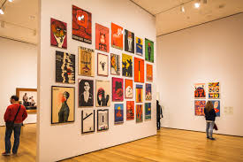
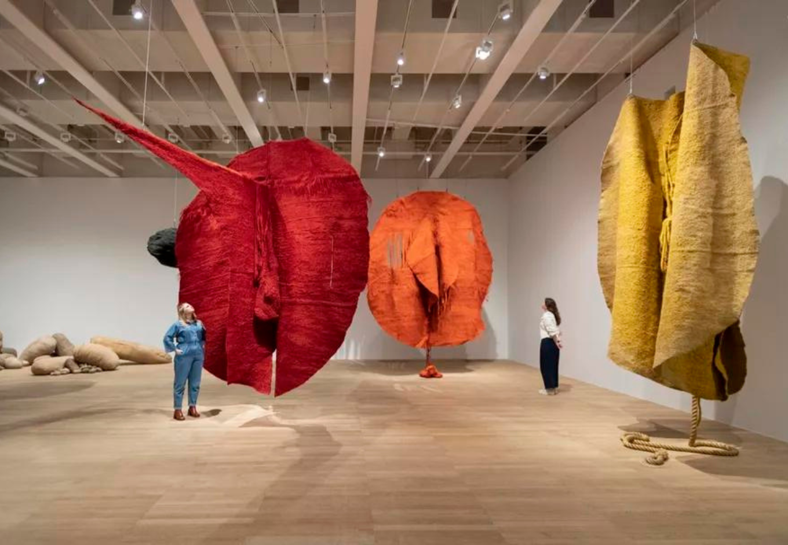

This page lists all of the research sources used to create this website, as well as a curated selection of materials for those that wish to go deeper into the Abstract Expressionist movement. Websites MoMA | Abstract Expressionism The Metropolitan Museum of Art | Abstract Expressionism Tate | Abstract Expressionism Willem De Kooning Foundation Articles The 5 Most Iconic Paintings by Jackson Pollock, By Zio, Thehundreds.com Abstract Expressionism: Action, Colour Fields and Emotion by Shira Wolfe, Artland Magazine Major National Gallery Survey to Spotlight Mark Rothko’s Lesser-Known Paintings on Paper by Alex Greenberger, Artnews The Irrepressible Emotion of Lee Krasner by Sophie Gilbert, The Atlantic Barnett Newman, 1905–1970, Whitney Museum of American Art Learn More  The Museum of Modern Art (MoMA) Home to iconic works by Pollock, Rothko, and Newman. Explore their vast online collection → Solomon R. Guggenheim Museum Known for its groundbreaking exhibitions and holdings of Non-Objective Painting. Explore the Movement →  Tate Modern, London Features major European holdings of Abstract Expressionism and its international influences. Read Tate's Art Guide →